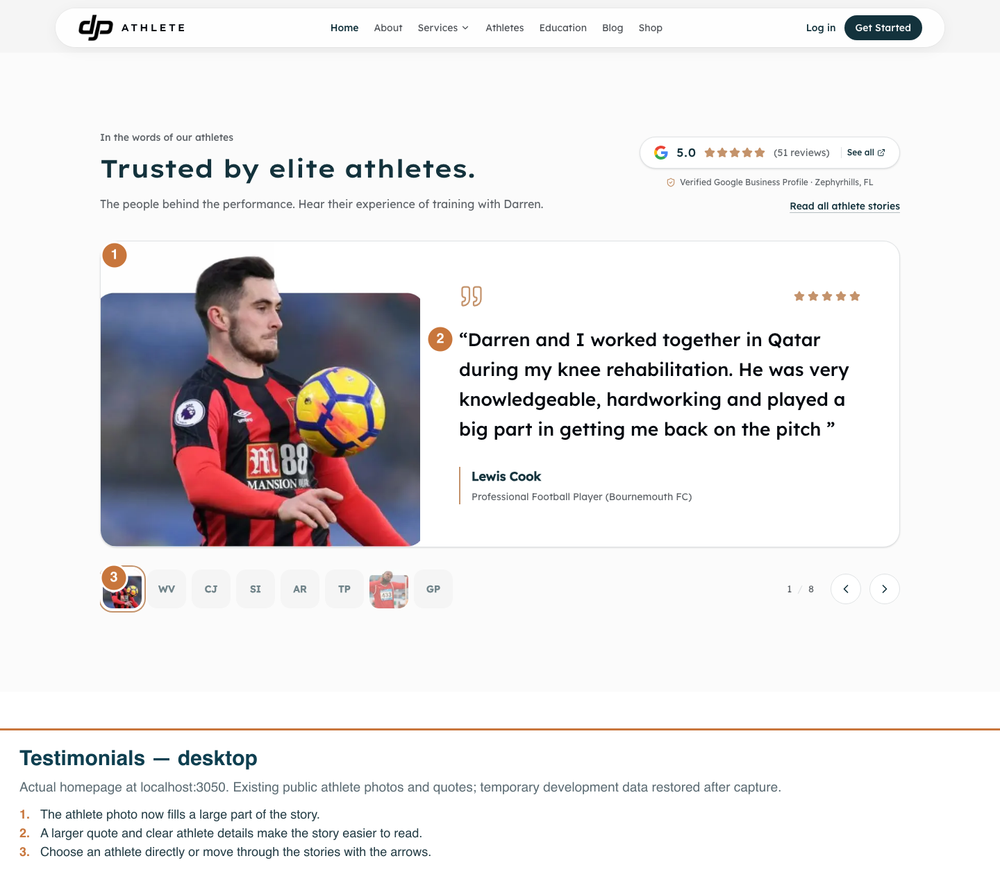
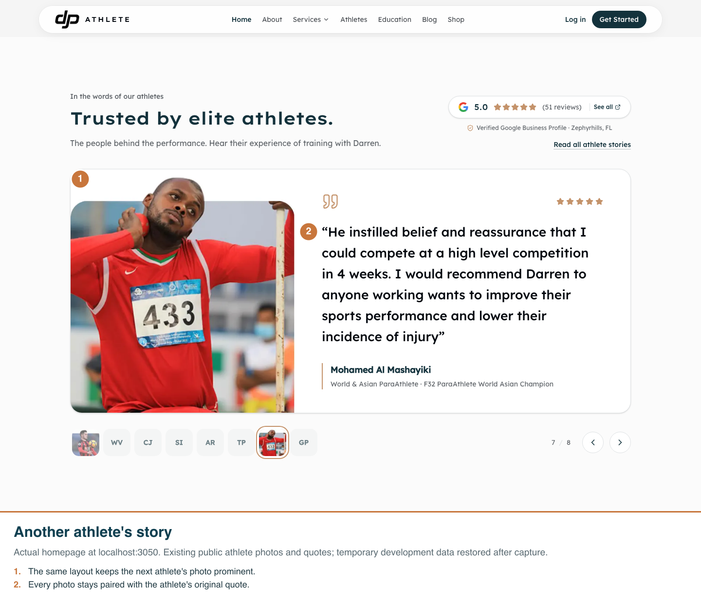
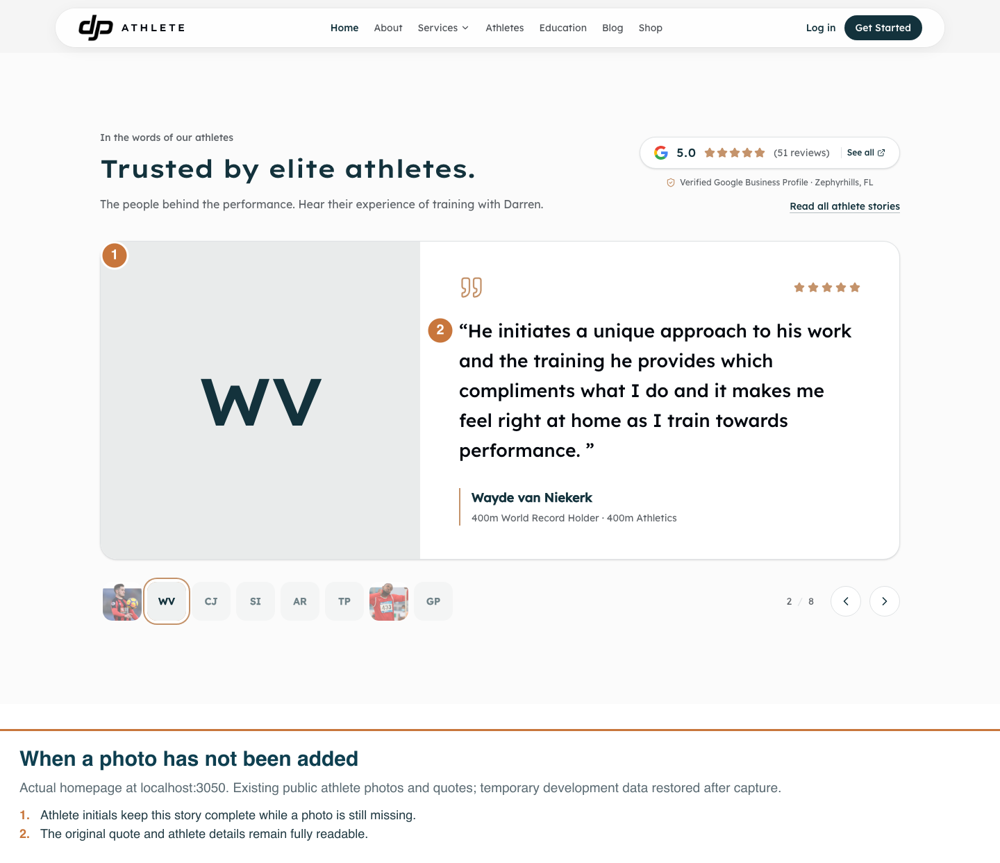

Captured from the actual homepage on the local running app. Numbered markers and captions are burned into each PNG at its original width. These are the existing published athlete photos and quotes, temporarily added to the development clone for capture and removed afterward.
Checked desktop and mobile, photo navigation and the missing-photo view. The public website has no dark-mode switch, so these captures show its supported light presentation.



Validation: 12 tests across the carousel and testimonial cache-invalidation suites passed. Browser checks found no page errors or horizontal overflow on mobile. Root type checking reports the recorded 236-error baseline; no diagnostics reference the changed files.